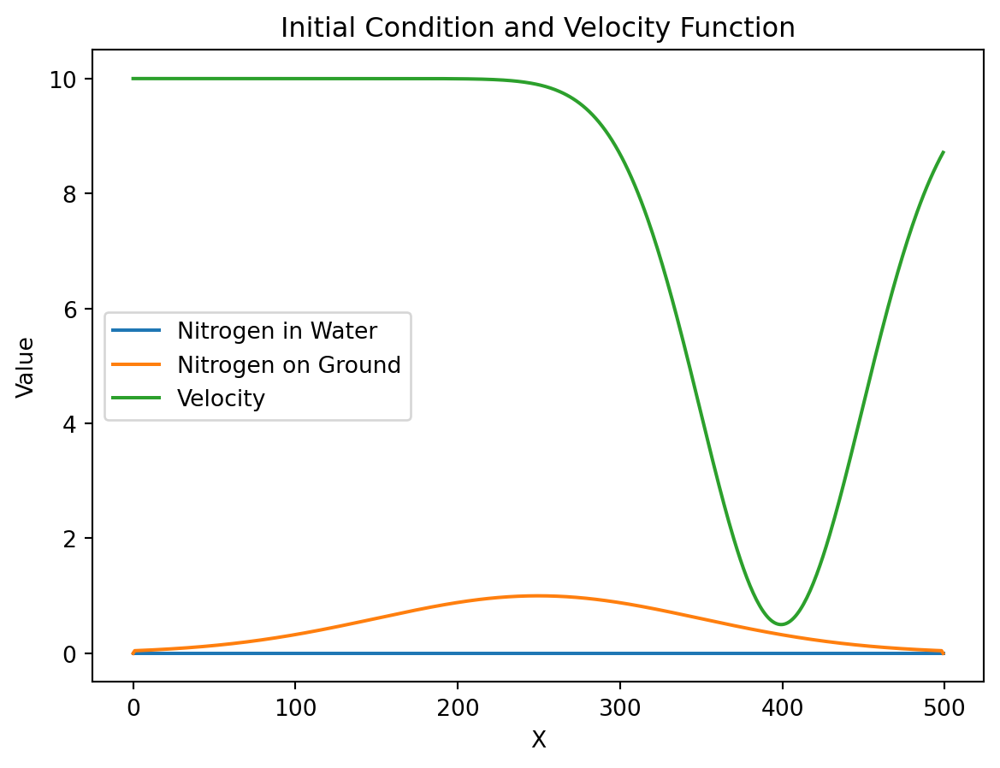
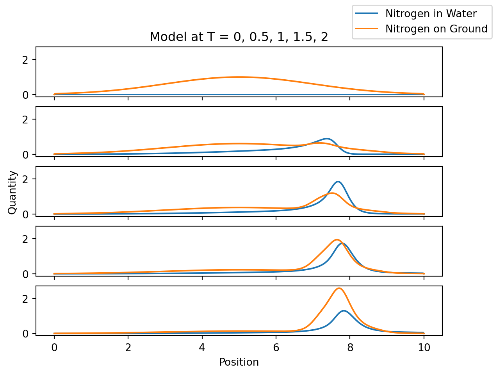
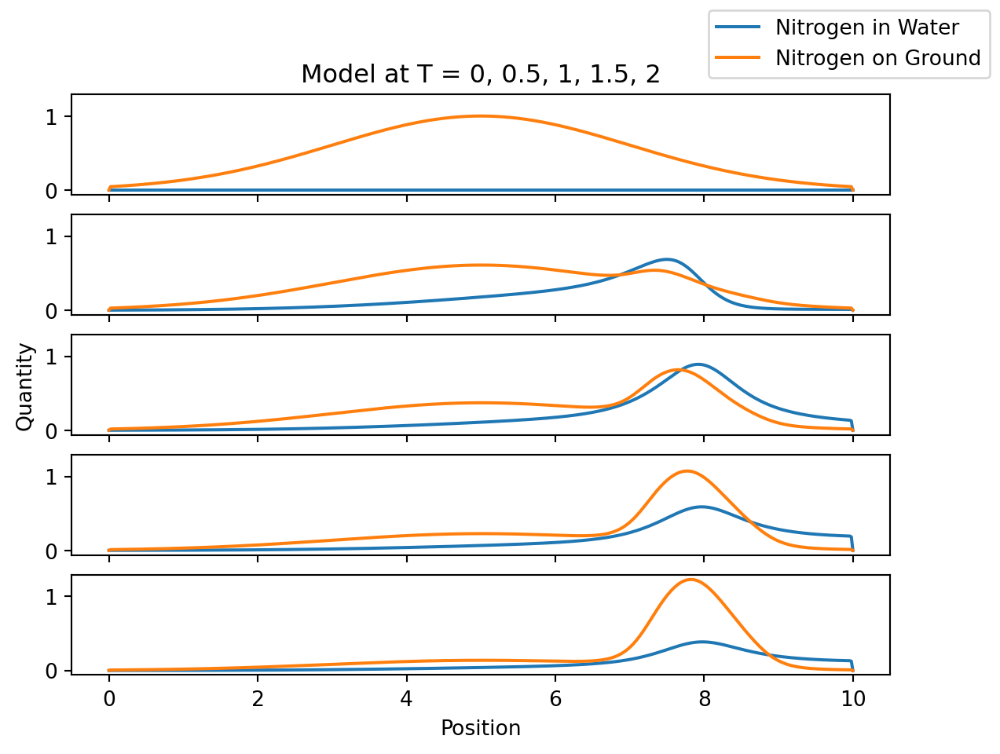
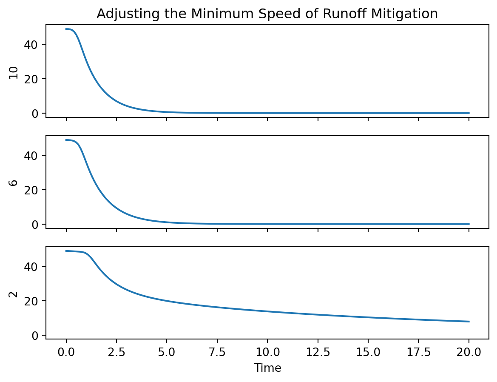
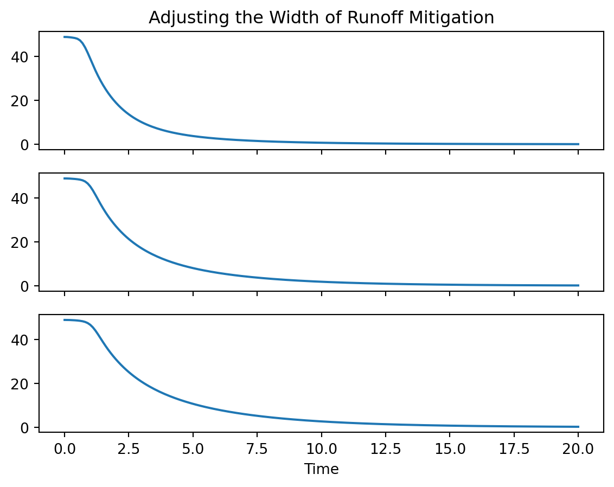
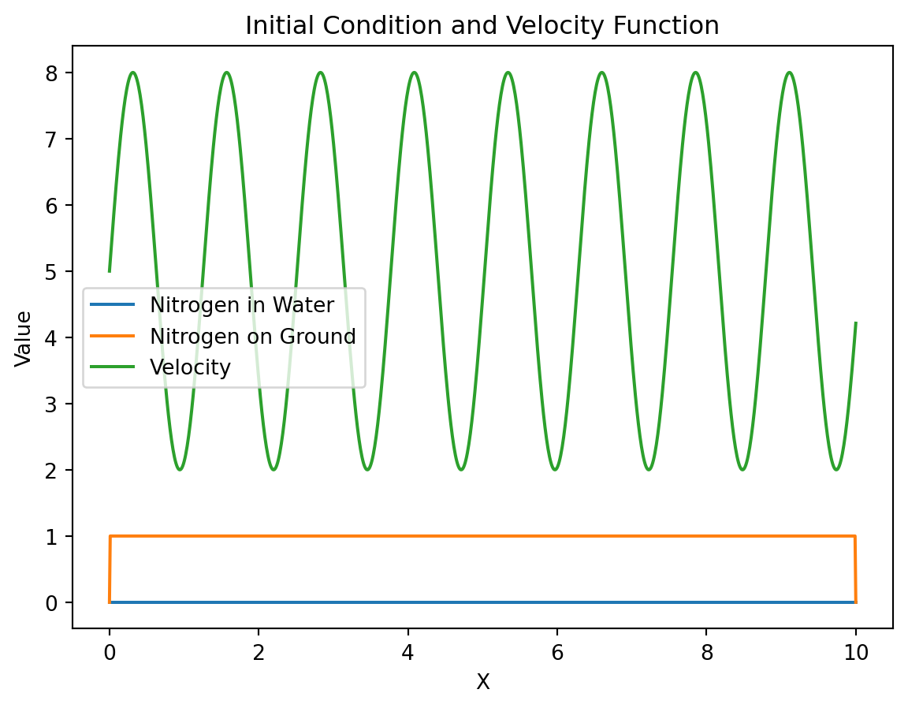
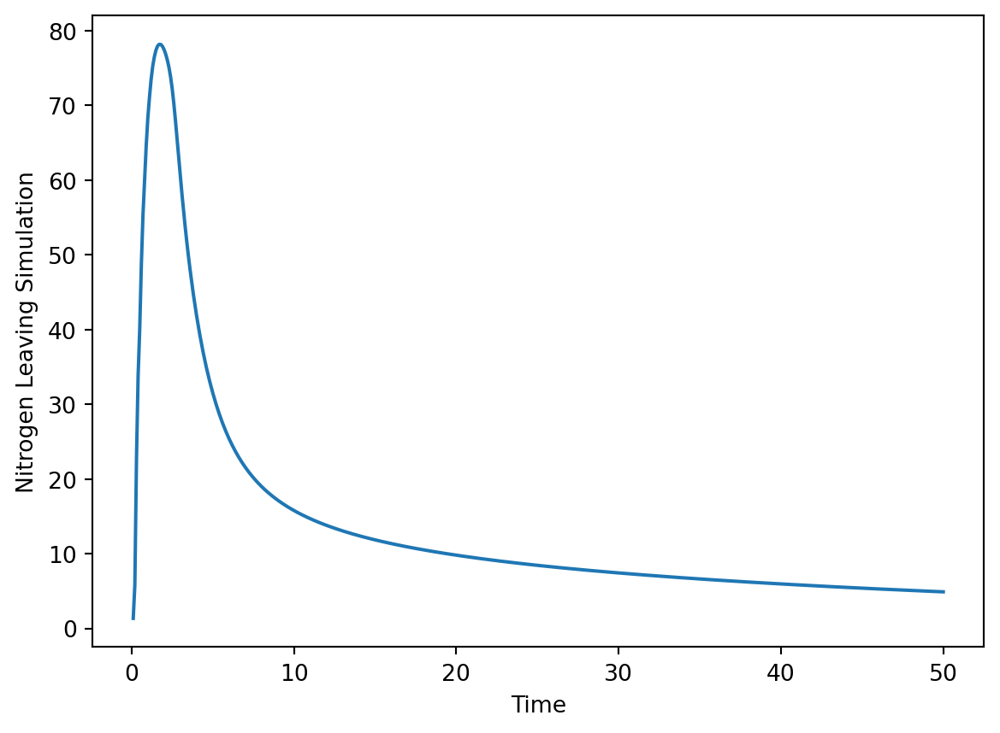

bc = {("C", "x"): ("dirichlet", "dirichlet"),
("N", "x"): ("dirichlet", "dirichlet")}
model = Model(["-dx(C*v) + k*(dxxC) + N*e**(v-n)/(1+e**(v-n)) - C*e**(n-v)/(1+e**(n-v))",
"-N*e**(v-n)/(1+e**(v-n)) + C*e**(n-v)/(1+e**(n-v))"],
["C(x)", "N(x)"],
parameters=["v(x)","k","n","e"],
boundary_conditions = bc)Advection Diffusion with Simple Erosion and Deposition
Math
Macalester
A simple mathematical model of nitrogen runoff. This paper was created as part of final project for Math 432: Mathematical Modeling, taught by Will Mitchell.
Introduction
Pollutant runoff is harmful to many ecosystems. Agricultural runoff can be particularly harmful to ecosystems because it contains a high concentration of nitrogen. This nitrogen is primarily from nitrogen fertilizers vital to global food supplies. When nitrogen is allowed to enter oceans and waterways it can fuel phytoplankton blooms (Michael Beman, Arrigo, and Matson 2005). Phytoplankton blooms, particularly those involving toxic species, can devastate ecosystems and the people that live near and rely on those ecosystems (Shumway, Burkholder, and Morton 2018). There are a variety of mitigation methods for reducing the amount of nitrogen that is carried out of agricultural areas by runoff.
A Potential Model
We represent nitrogen dissolved in water with \(C\) and nitrogen deposited on the ground with \(N\). Nitrogen in water is subject to simple advection-diffusion: \(C_{t} = -(Cv)_{x} + kC_{xx}\). Nitrogen on the ground is stationary. Some hydrological models of pollutant transport use similar logical frameworks. Shao et al. use an equivalent exchange layer to mediate between surface runoff and nutrients stored in the ground (Shao et al. 2023). A fractional mobile-immobile model is similarly predicated on simple advection-diffusion with mobile and immobile components of the solute (Sun et al. 2020). Both models present complicated methods for transfer between the two states.
\[ C_{t} = -(Cv)_{x} + kC_{xx} + N \frac{e^{v-n}}{1 + e^{v-n}} - C\frac{e^{n-v}}{1 + e^{n-v}}\\ \]
\[ N_{t} = - N \frac{e^{v-n}}{1 + e^{v-n}} + C\frac{e^{n-v}}{1 + e^{n-v}}\\ \]
We represent transfers between ground nitrogen and dissolved nitrogen in this model with \(N \frac{e^{v-n}}{1 + e^{v-n}} - C\frac{e^{n-v}}{1 + e^{n-v}}\). For fixed levels of \(N\) and \(C\), a velocity \(v > n\) will lead to erosion. For \(v >> n\), the rate of erosion approaches \(N\). On the other hand, if velocity \(v < n\) deposition will occur. For \(v << n\), the rate of deposition approaches \(C\). This ensures that no deposition will occur if the dissolved concentration is zero and no erosion will occur if the concentration on the ground is zero.
The simplicity of the model, of course, comes at the expense of accuracy.
The model assumes that there is a single erosion-deposition threshold (\(n\)); that advection does not vary with time; that the quantity of water does not have an impact; that raindrops do not have an impact; and that water only interacts with nitrogen. In the real world, we would likely see two thresholds for erosion-deposition (Earle 2015). Raindrops, as seen in the equivalent exchange layer model, are big drivers of sediment transport. Also, in the real world, water carrying other things would impact its ability to pick up nitrogen.
Implementation with Scikit FiniteDiff
A finite difference scheme lets us see the behavior of the model easily. Using the Scikit Finite Difference package we can enter the equations symbolically, set boundary conditions, set initial conditions, and run simulations. This greatly simplifies the modeling workflow.

Model Behavior

The basic model behavior is working as intended. Nitrogen from the ground is picked up from areas where velocity is high and deposited in the area where velocity is low.
Modeling with Different Advection
To get a better grasp on the behavior of the model we run it with a variety of different initial conditions. Here we look at a less effective runoff prevention measure that does not slow down the water as much. In the original, the speed of advection is slowed to .5 at \(x = 8\), in this second run it only slows to a speed of 2. Looking at the y-axes of these plots compared to those above we can see that this has managed to catch much less of the nitrogen.

These results are better visualized by looking at the total nitrogen present in the simulation over time. Nitrogen that is carried over the right boundary by the water is lost as runoff and we assume it enters the ecosystem. Good runoff mitigation will keep the total nitrogen present in the simulation high so it does not have a chance to enter the ecosystem and cause harmful algae blooms.

Different runoff prevention measures are represented by different advection slowdowns at \(x = 8\). The first graph represents no runoff prevention (a speed of 10 at \(x = 8\)) and the last graph represents an advection speed of 1 at \(x = 8\). In each scenario, there is a period at the start where the nitrogen level declines very slowly. During this period most of the nitrogen simply has not had enough time to advect to the right boundary. This is followed by a period of rapid decline in nitrogen content that slowly tapers down until there is no nitrogen left. The lower graphs, which have the more significant runoff prevention measure, show a slower nitrogen loss.
The way the model is set up, as long as there is no area of zero velocity, the total nitrogen content will eventually reach zero. For example: if the erosion deposition threshold \(n\) is 5 and the velocity over the entire area is 4 then, \[ N_{t} = - N \frac{e^{-1}}{1 + e^{-1}} + C\frac{e^{1}}{1 + e^{1}}\\ \]
At a glance, this implies deposition but eventually, any positive \(C\) is advected over the right boundary, and \(C = 0\) so there can’t be deposition. Even though \(\frac{e^{-1}}{1 + e^{-1}}\) is small it is the only term left so there will actually be erosion. If \(C = 0\) and \(N > 0\) there will be erosion regardless of velocity. \(n\) is not a hard cutoff where erosion becomes deposition, instead, it is the velocity where, assuming equal quantities of \(C\) and \(N\), erosion and deposition are equal. As \(v\) decreases, deposition just becomes a more dominant part of the model even though both deposition and erosion are still happening.
In the real world, it does not rain forever though, so slowing down the rate of nitrogen loss is still important.
I also looked at the effect of widening the low-velocity runoff mitigation area and found similar results.

Anomalous Solute Transport
Modeling anomalous solute transport is important for understanding water pollution. In normal transport, solute moves consistently with some linear relationship to time. Anomalous transport typically involves the early or late arrival of a portion of the solute. It tends to occur in porous mediums and when there are multiple different paths for the solute to take. This is often modeled with fractional models as is discussed in Sun et al. (2020). As seen earlier, the model developed here can replicate some of these characteristics. Most of the nitrogen reaches the right boundary of the simulation fairly early but small amounts of solute continue to arrive for a long time afterwards.


We can show the anomalous transport even better with a different initial condition. We set up alternating areas of fast and slow transport and a uniform initial distribution of nitrogen on the ground. This results in lots of nitrogen leaving the simulation at the start followed by smaller amounts of late-arriving nitrogen. When the simulation begins some of the nitrogen gets trapped in areas of low advection. Once trapped, it prevents other nitrogen from becoming trapped because a large enough \(N\) can offset the deposition that occurs when advection speed is below \(n\). So, most of the nitrogen is carried to the end without getting trapped. Then, as the water becomes free of nitrogen there is no longer any deposition to offset, so the large \(N\) just leads to erosion. The trapped nitrogen is slowly eroded and exits the simulation. This lines up very well with the theory of anomalous transport, which can often involve things like traps or side pools where the solute is stored temporarily.
Future Work
There is so much I would be interested in pursuing more if I had another two months to continue this project. I would first be interested in developing a more data driven approach to generating the spatially varying advection fields. This might require another mathematical model but it could also be done with an easier statistical approach using the data presented in Liu et al. (2020).
Another version of the model I used briefly had two different thresholds which more accurately matches how erosion and deposition work in the real world. The behavior of that model was extremely similar to the current model but I think it would be interesting to set up a couple of simulations to explore how they differ more methodically.
Implementing this model in 3D would be very straightforward using skfdiff and is also something I would want to look into. I think the main issue would be capturing how water moves around obstacles in the real world.
Moving away from just looking at nitrogen runoff I am interested in exploring what behavior results if velocity is made to depend on \(N\). \(N\), in that case, might represent something like soil that slows down water but can also be picked up and carried by it.
References
Earle, Steven. 2015. Physical Geology. BCcampus.
Liu, H. Q., J. H. Yang, C. X. Liu, Y. F. Diao, D. P. Ma, F. H. Li, A. E. Rahma, and T. W. Lei. 2020. “Flow Velocity on Cultivated Soil Slope with Wheat Straw Incorporation.” Journal of Hydrology 584 (May): 124667. https://doi.org/10.1016/j.jhydrol.2020.124667.
Michael Beman, J., Kevin R. Arrigo, and Pamela A. Matson. 2005. “Agricultural Runoff Fuels Large Phytoplankton Blooms in Vulnerable Areas of the Ocean.” Nature 434 (7030): 211–14. https://doi.org/10.1038/nature03370.
Shao, Fanfan, Wanghai Tao, Quanjiu Wang, Junhu Wu, Lijun Su, Haokui Yan, and Yibo Zhang. 2023. “A Mathematical Model Using an Equivalent Exchange Layer for Predicting Raindrop-Induced Nutrient Ejection from Soil to Runoff on Bare and Vegetated Slopes.” Journal of Hydrology 620 (May): 129546. https://doi.org/10.1016/j.jhydrol.2023.129546.
Shumway, Sandra E., JoAnn M. Burkholder, and Steve L. Morton. 2018. Harmful Algal Blooms: A Compendium Desk Reference. Wiley Blackwell, John Wiley & Sons, Inc.
Sun, Liwei, Han Qiu, Chuanhao Wu, Jie Niu, and Bill X. Hu. 2020. “A Review of Applications of Fractional Advection-Dispersion Equations for Anomalous Solute Transport in Surface and Subsurface Water.” WIREs Water 7 (4). https://doi.org/10.1002/wat2.1448.